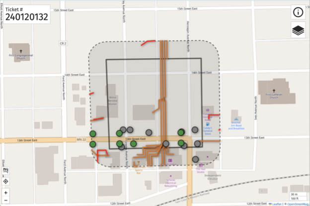
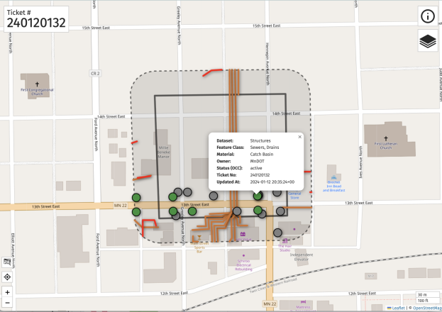
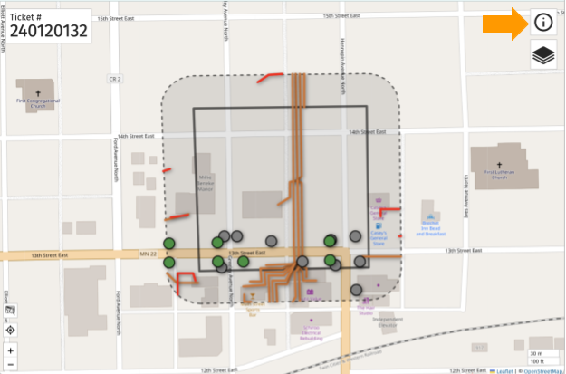
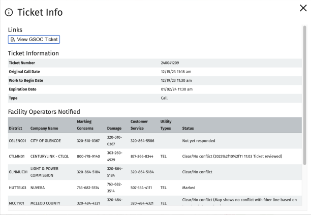
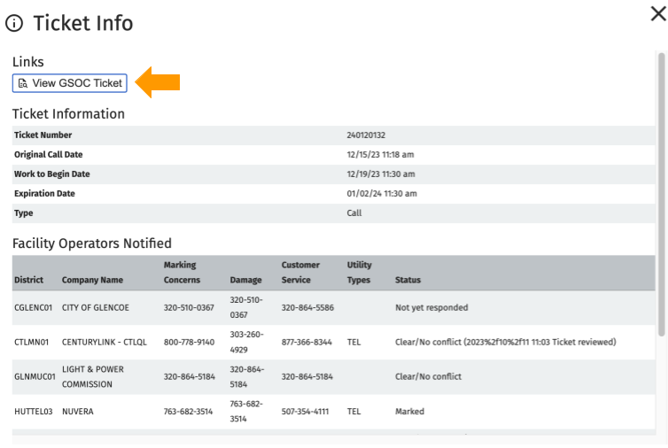
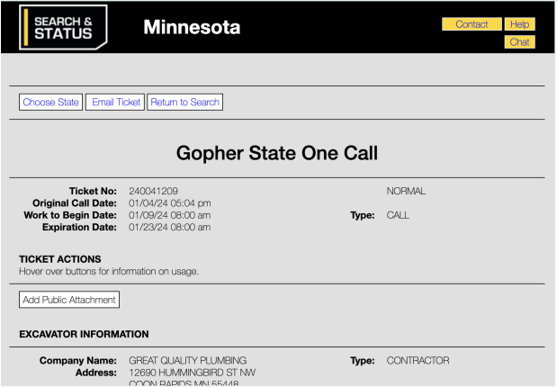
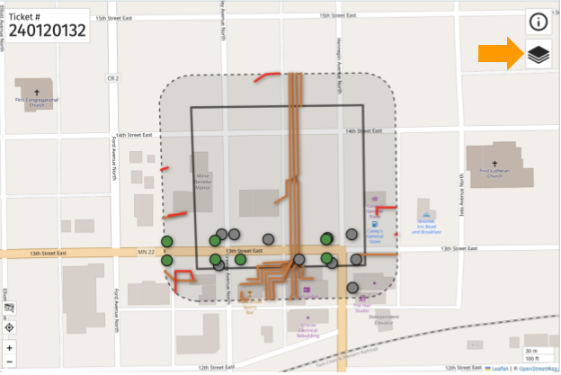
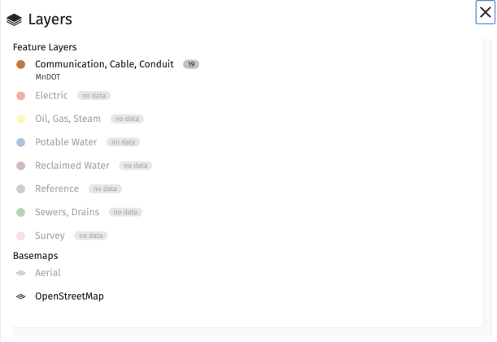

Using Ticket Viewer
The Ticket Viewer displays the polygon for the ticket area (solid line), surrounded by the 100 foot buffer (dotted line).

FuzionView Ticket Viewer
Identify Facility Infrastructure
Select a feature dot or line to identify the information available, including the date and time it was last updated.

Identifying Infrastructure
Hint
Zoom in to see more features.
Ticket Info
Click the Information icon at the top right to open Ticket Info.

FuzionView Ticket Viewer
The Ticket Info view displays basic ticket details and the facility owners that have been notified. Scroll down to see all available information.

FuzionView Ticket Info
The GSOC Ticket
You can open the original GSOC ticket from Ticket Info by clicking View GSOC Ticket.

Gopher State One Call (GSOC)
This is the original ticket in the Gopher State One Call system. For more information about GSOC, check out the documentation here

Gopher State One Call (GSOC)
Ticket Layers
From the Ticket Viewer, select the Layers icon at the top right to see available features in each layer.

Ticket Layers Options
- From the Layers page, customize your view:
Click any available feature layer to toggle it on or off.
Layers with no features are grayed out.
Select Aerial to change the Basemap from the default OpenStreetMap.

Ticket Layers Options